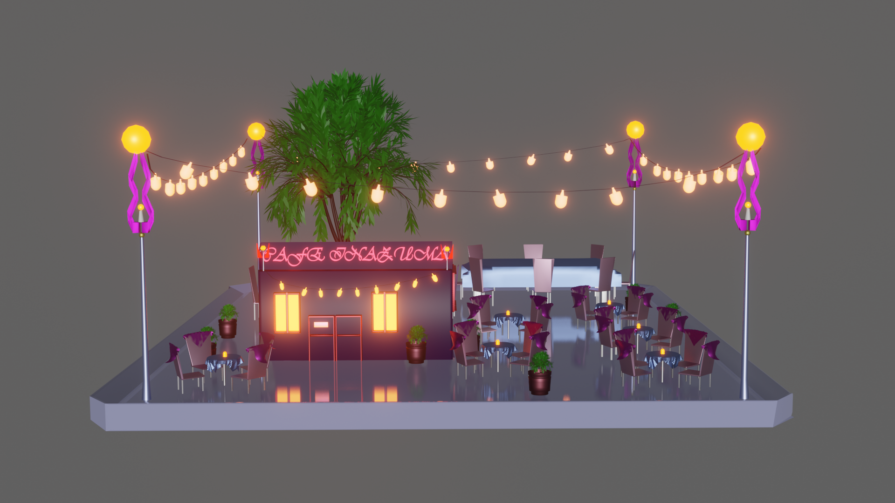
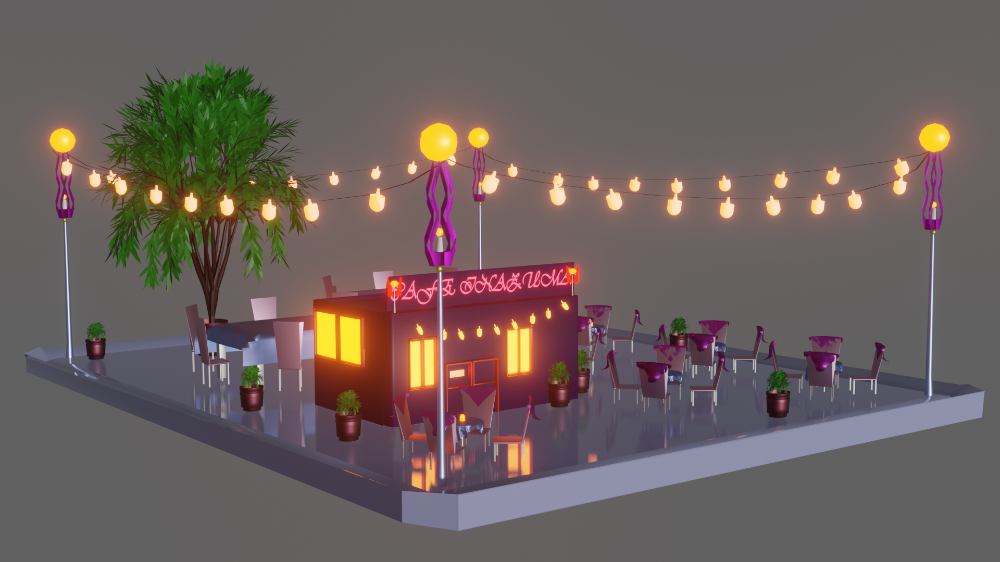

-популярный тип японского бенто который состоит в основном из риса, а также рыбы, мяса, солений, яиц, овощей и умэбоши (соленая маринованная слива). Есть также другие виды еды, такие как каштаново-рисовые суши, мясные и рисовые запеканки.
Тайяки с джемом анко
-оригинальная японская сладость,напоминающая наши орешки со сгущенкой.
Японцы делают свое печенье в форме большой рыбки с наполнителем.Сначала довольно жидкое тесто наливают в одну половинку, когда оно поджарится, кладут начинку.
Данго в сладком соусе
-японские клёцки или колобки из клейких сортов риса. Обычно их надевают на палочку и покрывают пастой анко, мукой кинако, либо жарят.
Наша 3D модель

3D модель полностью соответсвует ресторанной территории:
-стулья;
-столы;
-скатерти;
-полотенца;
-гирлянды;
-лампы;
-флора и т.д.

Перейдя на вкладку Бронирование,вы сможете посмотреть на фотографии модели с разных ракурсов и выбрать любой столик.
Более подробная информация
о бронировании и просмотре модели будет размещена в вышеупомянутой вкладке.